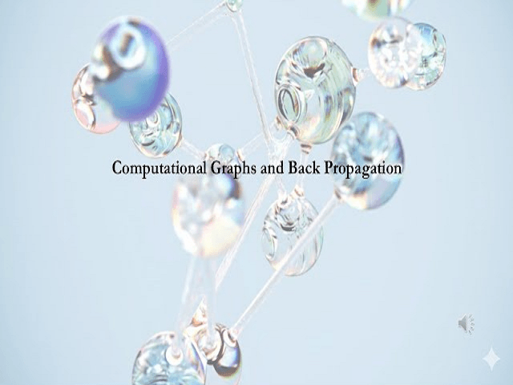

Урок 3: Математика оптимизаторов
ML-инженер • Архитектура нейросетей с нуля
На прошлом уроке мы научились вычислять градиенты. Теперь разберем, как использовать эти градиенты для обновления весов. Задача оптимизатора — модифицировать параметры сети так, чтобы минимизировать функцию потерь, избегая застревания в локальных минимумах и седловых точках.
Классический шаг обновления параметров весов w с использованием градиента g и коэффициента скорости обучения (learning rate) α:
В PyTorch базовый шаг SGD и ручное зануление градиентов выглядят следующим образом:
import torch
# Инициализируем вес и скорость обучения
w = torch.tensor([5.0], requires_grad=True)
lr = 0.1
# Симуляция одного шага обучения
loss = w ** 2 # Функция потерь
loss.backward()
# Обновляем веса внутри torch.no_grad(), чтобы шаг не записывался в граф
with torch.no_grad():
w -= lr * w.grad
# ВАЖНО: Обязательно зануляем градиент, иначе на следующем шаге новые значения прибавятся к старым
w.grad.zero_()
print("Вес после шага SGD:", w.item())Чтобы преодолеть локальные минимумы и уменьшить осцилляции (колебания), вводится понятие скорости v и фактора затухания γ (обычно 0.9). Оптимизатор «накапливает инерцию» при движении в одном направлении:
# Инициализация оптимизатора со встроенным Momentum в PyTorch
model_param = torch.nn.Parameter(torch.tensor([5.0]))
optimizer = torch.optim.SGD([model_param], lr=0.1, momentum=0.9)
# Шаг оптимизации
loss = model_param ** 2
loss.backward()
optimizer.step() # Автоматически рассчитывает инерцию и обновляет вес
optimizer.zero_grad() # Автоматически очищает градиентыВместо одинакового шага для всех параметров, RMSprop делит шаг обучения для каждого веса на скользящее среднее квадратов его прошлых градиентов s. Если у веса постоянно огромные градиенты, его шаг уменьшается, если крошечные — увеличивается:
Где ε (epsilon) — маленькое число (например, 1e-8) для предотвращения деления на ноль.
Adam объединяет идеи Momentum и RMSprop. Он одновременно отслеживает среднее значение градиентов (первый момент m) и среднее значение квадратов градиентов (второй момент v), применяя поправку на смещение к началу обучения:
# Использование Adam в реальных архитектурах
# lr — скорость обучения (обычно 1e-3 или 3e-4 для трансформеров)
# betas — коэффициенты затухания для первого и второго моментов соответственно
optimizer = torch.optim.Adam([model_param], lr=0.001, betas=(0.9, 0.999), eps=1e-08)
# Стандартный тренировочный цикл оптимизатора в Production:
# 1. optimizer.zero_grad()
# 2. loss = model(inputs)
# 3. loss.backward()
# 4. optimizer.step()Напишите кастомный класс оптимизатора на чистом Python/PyTorch, унаследованный от torch.optim.Optimizer, реализующий алгоритм SGD с Momentum. Проверьте его работоспособность, обучив одиночный нейрон аппроксимировать простую линейную функцию, и сравните скорость сходимости с базовым SGD без инерции.
import torch
from torch.optim import Optimizer
class SGDMomentum(Optimizer):
def __init__(self, params, lr=0.1, momentum=0.9):
defaults = dict(lr=lr, momentum=momentum)
super().__init__(params, defaults)
def step(self, closure=None):
loss = None
if closure is not None:
loss = closure()
for group in self.param_groups:
for p in group['params']:
if p.grad is None:
continue
grad = p.grad
state = self.state[p]
# State initialization
if len(state) == 0:
state['momentum_buffer'] = torch.zeros_like(p)
momentum_buffer = state['momentum_buffer']
# TODO: Реализуйте формулу Momentum
# v = gamma * v + lr * grad
# p = p - v
# ВАШ КОД ЗДЕСЬ
return loss
# --- Тестирование ---
if __name__ == "__main__":
param = torch.nn.Parameter(torch.tensor([5.0]))
opt = SGDMomentum([param], lr=0.1, momentum=0.9)
for i in range(5):
loss = param ** 2
opt.zero_grad()
loss.backward()
opt.step()
print(f"Step {i+1}: w = {param.item():.4f}")import torch
from torch.optim import Optimizer
class SGDMomentum(Optimizer):
def __init__(self, params, lr=0.1, momentum=0.9):
defaults = dict(lr=lr, momentum=momentum)
super().__init__(params, defaults)
def step(self, closure=None):
loss = None
if closure is not None:
loss = closure()
for group in self.param_groups:
for p in group['params']:
if p.grad is None:
continue
grad = p.grad
state = self.state[p]
if len(state) == 0:
state['momentum_buffer'] = torch.zeros_like(p)
momentum_buffer = state['momentum_buffer']
# Формула Momentum
momentum_buffer.mul_(group['momentum']).add_(grad, alpha=group['lr'])
p.add_(momentum_buffer, alpha=-1)
return loss
if __name__ == "__main__":
param = torch.nn.Parameter(torch.tensor([5.0]))
opt = SGDMomentum([param], lr=0.1, momentum=0.9)
for i in range(5):
loss = param ** 2
opt.zero_grad()
loss.backward()
opt.step()
print(f"Step {i+1}: w = {param.item():.4f}")
# С Momentum вес сходится к 0 быстрее, чем с обычным SGD!Adam(lr=3e-4). Если модель не сходится или переобучается — переходите на SGD + Momentum с расписанием learning rate (StepLR или CosineAnnealing).
Приложение бесплатное. Было и останется.
Если проект помог вам или вашим близким — можете поддержать разработку добровольным переводом.
❤️ Спасибо за поддержку!
Перейти в каталог
